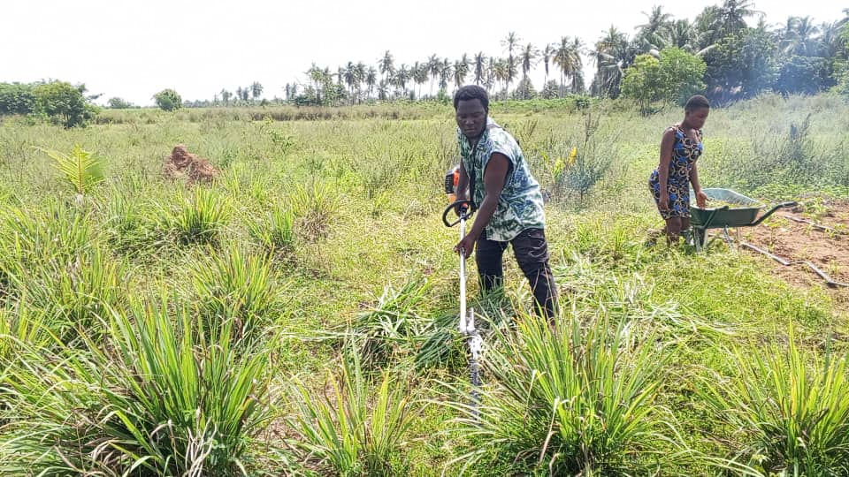

Notre Vision Durable
Plus qu'une entreprise, AGRI-VALOR est un pilier du développement rural.
Fondée sur le principe de l'économie circulaire, notre unité transforme le manioc en produits de haute qualité tout en préservant notre environnement.
